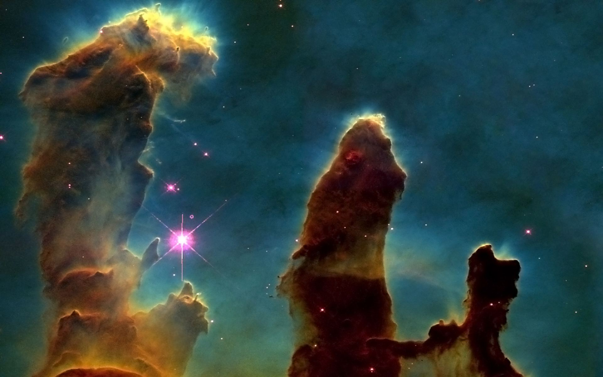

La historia del James Webb Space Telescope Artículo editado por ultima vez el: 12/07/2022
Este fantástico telescopio, con un diseño que lo hace parecer futurista, es un proyecto que empezó en Septiembre
de 1989, en donde la NASA en conjunto con el Instituto de Ciencia de Telescopios Espaciales fundarían el
taller de telescopios espaciales de próxima generación. Esto hizo posible que más de 130 astrónomos e
ingenieros pudieran reunirse para proponer que la NASA pudiera investigar qué tan posible sería construir
un telescopio espacial que viera en el espectro infrarrojo, que midiera 16 metros y que pudiera orbitar
la Luna con el objetivo de estudiar galaxias con alto desplazamiento al rojo. No fue hasta 1996 que se pudo
aprobar el proyecto, diferenciándose en que ahora sería un telescopio de más de 4 metros de diámetro y orbitaría más
allá de la Luna y la Tierra. Este nuevo proyecto estaría pensado para ser el sucesor del telescopio espacial
Hubble, que llevaba ya 6 años en funcionamiento y que le fue suficiente para revolucionar la manera en que
los astrónomos veían el universo.

"Pilares de la Creación" en la Nebulosa del Águila. Foto tomada por el Hubble en 1995
Este proyecto fue iniciado por Estados Unidos, Canadá y la Unión Europea. La NASA en un principio planeaba
asignar el equipo científico y financiero para la construcción del telescopio, pero no fue hasta el año 2002
en el que por fin estos serían seleccionados. Ese mismo año también se le dio el nombre de James Webb al
telescopio, en honor al administrador de la NASA que dirigió el programa Apolo. en 2005 se eligió su lugar de
despegue, que sería la Guyana Francesa y, como vehículo de lanzamiento, un cohete Ariane 5, perteneciente
a la Agencia Espacial Europea. Inicialmente contaría con un
presupuesto de 500 millones de dólares y estaría programado para ser lanzado en 2007, pero este telescopio
sufriría muchos retrasos en su lanzamiento por diversos problemas, lo que hizo que su lanzamiento fuera
retrasado hasta diciembre de 2021 y que su presupuesto se elevara a los 10,000 millones de dólares, convirtiéndose
en el telescopio más caro de la historia.
Cohete Ariane 5 Proporcionado por la Agencia Espacial Europea
El hecho de que se tomara la decisión de lanzar el telescopio en un cohete Ariane 5 suponía uno de los mayores
retos para los ingenieros que trabajaban para este, el que un telescopio de 16 metros de longitud debía entrar
en un cohete de 5.4 metros de diámetro. Fue así que este telescopio tuvo que implementar una tecnología que le
permitiera plegarse en la Tierra y desplegarse automáticamente en órbita como si se tratase de un origami.
Esto fue uno de los mayores inconvenientes que hizo que el telescopio se retrasara tantas veces, ya que el telescopio
debía hacer todo esto en una órbita alejada más allá de la Luna, lo que hace que no se puedan enviar humanos a
repararlo o hacerle mantenimiento como sucedia con su antecesor, el Hubble, que se encuentra a unos 540km de altura
de la superficie. Normalmente la NASA siempre cuenta con una misión de respaldo por cualquier inconveniente, pero dado
el presupuesto al que se había elevado el proyecto, no era posible contar con una esta vez, lo que hacía necesario que
los procedimientos fueran lo más precisos y viables posibles.
Despliegue del Telescopio Espacial James Webb en la Tierra
Retos de ingeniería del James Webb Space Telescope
Gracias a los avances que hizo posible el telescopio espacial Hubble, el telescopio espacial James Webb
estaba destinado a ver con una mejor presición y definición aquellos cuerpos celestes que el Hubble únicamente
podía detectar como manchas oscuras sin definir, esto con fines de investigación científica. El telescopio espacial
James Webb necesitaba pues, un espejo reflector casi 4 veces más grande que el Hubble, pero si este se hacía
con el mismo material con el que estaba hecho el Hubble, James Webb no podría orbitar en el tiempo especificado ni
operar con normalidad debido al peso excesivo, así que se tomó la decisión de implementar Berilio en el espejo reflector del Hubble, este
recubierto con una fina capa de oro de 100 nanómetros para ayudar a las propiedades reflectantes del berilio. La
razón de que el espejo se haya dividido en 18 segmentos hexagonales fue porque esta forma era la que permitiría
una mejor semejanza a un círculo al momento de acoplarse (La importancia de que la forma sea circular es porque con
esa forma se refleja toda la luz que recibe a un solo punto, cosa que, por ejemplo, con un cuadrado saldría disparada
por todos lados, menos al punto central), además de ser ideal para no dejar espacios vacíos
entre cada segmento como ocurre con las demás figuras. La decisión de que el telescopio trabajara en el espectro
infrarrojo se debe a un hecho que nos dice que la Luz, al viajar por millones de kilómetros, las ondas que emite se
debilitan, es decir, se van más hacia el espectro infrarrojo; es por esto que el hecho de que el telescopio
opere en el espectro infrarrojo es una gran ventaja, pudiendo detectar hasta la luz más tenue que lleva millones de
años recorriendo el universo, es por esto que se dice que con este telescopio podremos ver bastante tiempo en el pasado, para
ser más precisos, podrá ver 13,000 millones de años al pasado y con gran definición, algo hasta ahora inimaginable.
El hecho de que el telescopio James Webb opere en el espectro infrarrojo hace que tenga otro inconveniente al estar
en el espacio, y esto es la temperatura, ya que para detectar esa luz tan débil de galaxias lejanas, necesita tener
menos temperatura que la partícula-onda de luz que llega, ya que estas al estar muy debilitadas, también han ido bajando su
temperatura con el pasar del tiempo. Lo ideal para el telescopio es que este esté a una temperatura de -220 C°, por esto es
que el telescopio un parasol en su parte inferior, ya que con este logrará mantener esa temperatura en el espacio
profundo. Se escogió la órbita Lagrange 2 ya que en esta siempre estaría del lado nocturno de la Tierra y así
poder estar disponible las 24 horas al día, los 7 días a la semana.
Segmentos del Telescopio Espacial James Webb sin la capa fina de oro
Despegue del James Webb Space Telescope
Luego de muchos retrasos, desde 2007 se había estado esperando que esta misión se pusiera en marcha para que llegara esa nueva
era para la astronomía. 19 años después, un 25 de diciembre del año 2021, luego de la Noche Buena, a las 7:20 A.M. EST, el Telescopio
Espacial James Webb realizaba su despegue en la Guyana Francesa, desde un cohete Ariane 5.
James Webb permitirá ver los núcleos de galaxias y regiones de polvo cósmico donde nacen nuevas estrellas y otros
planetas. La radiación infrarroja puede penentrar en esas regiones del espacio que se muestran oscurecidas en luz visible. Apreciar
el Universo con James Webb será como levantar un velo que antes estaba oculto a nuestros ojos, las longitudes de onda del infrarrojo
cercano y medio permite estudiar una gran cantidad de objetos celestes con una resolución nunca antes vista, desde planetas de nuestro
Sistema Solar, estrellas cercanas, determinar la composición de atmósferas de exoplanetas, galaxias del grupo local, hasta los
confines del universo. Se pronostica que la misión dure 5 años, aunque se puede extender a 10. Nuestro observatorio lleva nuestros
sueños y esperanzas, en la ventana del lanzamiento del 25 de diciembre de 2021 para hacer historia y llevarnos en un viaje a través del
tiempo y el espacio; Un nuevo universo nos espera, lo que nos muestre James Webb quizás nos ayude a descubrir más sobre nosotros mismos y
de nuestro lugar en el universo, debemos continuar explorando el cosmos y descubrir qué hay más allá del próximo horizonte.